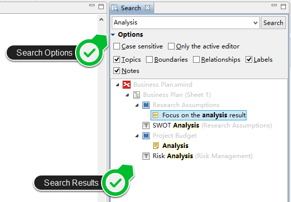

Powerful Search
A powerful search can help us to find the targeted information in all opened XMind workbook soon. More important, you can quickly navigate to the target with XMind.
- Open Search View by clicking "Tools - Search Workbooks" from the menu
- Typy the content you want at the input field
- Select the advanced options, like Case sensitive, Only the active editor, Topics, Boundaries etc.
- Click "Search" button and begin to search
- All search results will be displayed as a tree structure. We can see the full content, and the full path.
